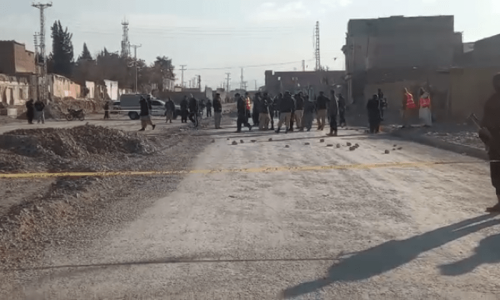
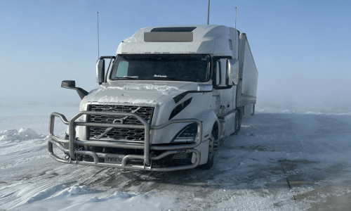
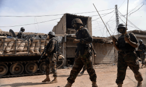
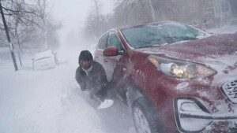
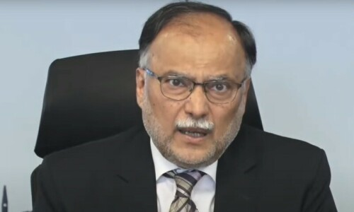

| Watch Live | Arshad Sharif |
Monday,December26,2022 | 01 Jumada Al-Akhirah 1444
| LATEST | | PAKISTAN | | WORLD | | BUSINESS & ECONMOY | | SPORTS | | LIFE & STY | |
Nation celebrates Quaid-e-Azam Day with ZealPresident Alvi, PM Shebaz urge nation to follow guidance of Jinnah |
Five soldiers martyred several civilians injured as multiple blasts rock Balochistan |
|---|
Imran Khan clarifies why he did not opt to immediately dissolve assembliesSays he has no doubt that Parvez Elahi Will not dissolve the Punjab Asssembly |
A meeting with death: The Pakistani trucker who survived an American snowstorm |
 |
|---|
Operation to stop terrorists entering from Afghanistan underwayOne terrorist has been killed and one soldier martyred, operation has been active for 96 hours  |
Babar rejects ‘defensive’ approach criticism |
|---|
22 dead as savage US blizzard cuts power, snarls travelDrivers are being warned not to take to the roads  |
Govt announces 20,000 paid internships for engineers |
 |
|---|
Putin says Russia ready to negotiate over UkraineSays Russia is acting in 'right direction" in Ukraine because West is trying to cleave Russia apart |
|---|